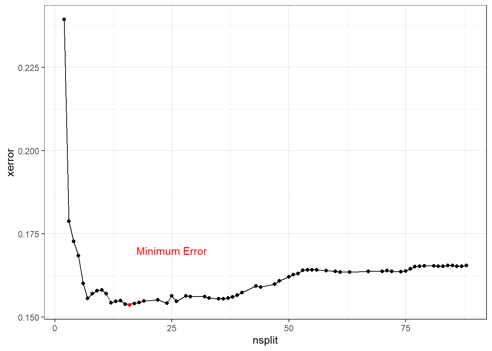
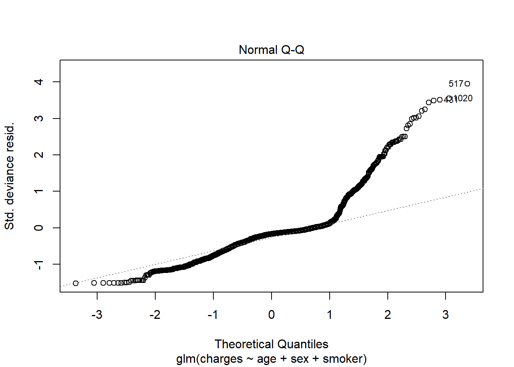

9 Tree-based models
9.1 Decision Trees
Decision trees can be used for either classification or regression problems. The model structure is a series of yes/no questions. Depending on how each observation answers these questions, a prediction is made.
The below example shows how a single tree can predict health claims.
- For non-smokers, the predicted annual claims are 8,434. This represents 80% of the observations
- For smokers with a
bmiof less than 30, the predicted annual claims are 21,000. 10% of patients fall into this bucket. - For smokers with a
bmiof more than 30, the prediction is 42,000. This bucket accounts for 11% of patients.

Figure 9.1: Decision tree of health costs
We can cut the data set up into these groups and look at the claim costs. From this grouping, we can see that smoker is the most important variable as the difference in average claims is about 20,000.
| smoker | bmi_30 | mean_claims | percent |
|---|---|---|---|
| no | bmi < 30 | $7,977.03 | 0.38 |
| no | bmi >= 30 | $8,842.69 | 0.42 |
| yes | bmi < 30 | $21,363.22 | 0.10 |
| yes | bmi >= 30 | $41,557.99 | 0.11 |
This was a very simple example because there were only two variables. If we have more variables, the tree will get large very quickly. This will result in overfitting; there will be good performance on the training data but poor performance on the test data.
The step-by-step process of building a tree is
Step 1: Choose a variable at random.
This could be any variable in age, children, charges, sex, smoker, age_bucket, bmi, or region.
Step 2: Find the split point which best seperates observations out based on the value of \(y\). A good split is one where the \(y\)’s are very different. *
In this case, smoker was chosen. Then we can only split this in one way: smoker = 1 or smoker = 0.
Then for each of these groups, smokers and non-smokers, choose another variable at random. In this case, for no-smokers, age was chosen. To find the best cut point of age, look at all possible age cut points from 18, 19, 20, 21, …, 64 and choose the one which best separates the data.
There are three ways of deciding where to split
- Entropy (aka, information gain)
- Gini
- Classification error
Of these, only the first two are commonly used. The exam is not going to ask you to calculate either of these. Just know that neither method will work better on all data sets, and so the best practice is to test both and compare the performance.
Step 3: Continue doing this until a stopping criteria is reached. For example, the minimum number of observations is 5 or less.
As you can see, this results in a very deep tree.
tree <- rpart(formula = charges ~ ., data = health_insurance,
control = rpart.control(cp = 0.003))
rpart.plot(tree, type = 3)
Step 4: Apply cost comlexity pruning to simplify the tree
Intuitively, we know that the above model would perform poorly due to overfitting. We want to make it simpler by removing nodes. This is very similar to how in linear models we reduce complexity by reducing the number of coefficients.
A measure of the depth of the tree is the complexity. A simple way of measuring this from the number of terminal nodes, called \(|T|\). This is similar to the “degrees of freedom” in a linear model. In the above example, \(|T| = 8\). The amount of penalization is controlled by \(\alpha\). This is very similar to \(\lambda\) in the Lasso.
Intuitively, merely only looking at the number of nodes by itself is too simple because not all data sets will have the same characteristics such as \(n\), \(p\), the number of categorical variables, correlations between variables, and so fourth. In addition, if we just looked at the error (squared error in this case) we would overfit very easily. To address this issue, we use a cost function which takes into account the error as well as \(|T|\).
To calculate the cost of a tree, number the terminal nodes from \(1\) to \(|T|\), and let the set of observations that fall into the \(mth\) bucket be \(R_m\). Then add up the squared error over all terminal nodes to the penalty term.
\[ \text{Cost}_\alpha(T) = \sum_{m=1}^{|T|} \sum_{R_m}(y_i - \hat{y}_{Rm})^2 + \alpha |T| \]
Step 5: Use cross-validation to select the best alpha
The cost is controlled by the CP parameter. In the above example, did you notice the line rpart.control(cp = 0.003)? This is telling rpart to continue growing the tree until the CP reaches 0.003. At each subtree, we can measure the cost CP as well as the cross-validation error xerror.
This is stored in the cptable
tree <- rpart(formula = charges ~ ., data = health_insurance,
control = rpart.control(cp = 0.0001))
cost <- tree$cptable %>%
as_tibble() %>%
select(nsplit, CP, xerror)
cost %>% head()## # A tibble: 6 x 3
## nsplit CP xerror
## <dbl> <dbl> <dbl>
## 1 0 0.620 1.00
## 2 1 0.144 0.382
## 3 2 0.0637 0.240
## 4 3 0.00967 0.178
## 5 4 0.00784 0.171
## 6 5 0.00712 0.169As more splits are added, the cost continues to decrease, reaches a minimum, and then begins to increase.

To optimize performance, choose the number of splits which has the lowest error. Often, though, the goal of using a decision tree is to create a simple model. In this case, we can err or the side of a lower nsplit so that the tree is shorter and more interpretable. All of the questions on so far have only used decision trees for interpretability, and a different model method has been used when predictive power is needed.
You will typically be given the below code, which does this automatically. To get full credit on decision tree questions, mention that you used cross-validation to select the number of splits.
Once we have selected \(\alpha\), the tree is pruned to be shorter.
9.2 Advantages and disadvantages
Advantages
- Easy to interpret
- Captures interaction effects
- Captures non-linearities
- Handles continuous and categorical data
- Handles missing values
Disadvantages
- Is a “weak learner” because of low predictive power
- Does not work on small data sets
- Is often a simplification of the underlying process because all observations at terminal nodes have equal predicted values
- Is biased towards selecting high-cardinality features because more possible split points for these features tend to lead to overfitting
- High variance (which can be alleviated with stricter parameters) leads the “easy to interpret results” to change upon retraining Unable to predict beyond the range of the training data for regression (because each predicted value is an average of training samples)
| Readings | |
|---|---|
| ISLR 8.1.1 Basics of Decision Trees | |
| ISLR 8.1.2 Classification Trees | |
| rpart Documentation (Optional) |
9.3 Ensemble learning
The “wisdom of crowds” says that often many are smater than the few. In the context of modeling, the models which we have looked at so far have been single guesses; however, often the underlying process is more complex than any single model can explain. If we build separate models and then combine them, known as ensembling, performance can be improved. Instead of trying to create a single perfect model, many simple models, known as weak learners are combined into a meta-model.
The two main ways that models are combined are through bagging and boosting.
9.3.1 Bagging
To start, we create many “copies” of the training data by sampling with replacement. Then we fit a simple model, typically a decision tree or linear model, to each of the data sets. Because each model is looking at different areas of the data, the predictions are different. The final model is a weighted average of each of the individual models.
9.3.2 Boosting
Boosting always uses the original training data and iteratively fits models to the error of the prior models. These weak learners are ineffective by themselves but powerful when added together. Unlike with bagging, the computer must train these weak learners sequentially instead of in parallel.
9.4 Random Forests
A random forest is the most common example of bagging. As the name implies, a forest is made up of trees. Seperate trees are fit to sampled datasets. For random forests, there is one minor modification: in order to make each model even more different, each tree selects a random subset of variables.
- Assume that the underlying process, \(Y\), has some signal within the data \(\mathbf{X}\).
- Introduce randomness (variance) to capture the signal.
- Remove the variance by taking an average.
When using only a single tree, there can only be as many predictions as there are terminal nodes. In a random forest, predictions can be more granular due to the contribution of each of the trees.
The below graph illustrates this. A single tree (left) has stair-like, step-wise predictions whereas a random forest is free to predict any value. The color represents the predicted value (yellow = highest, black = lowest).

In most applications, only the mtry parameter needs to be tuned. Tuning the ntrees parameter is not required; however, the soa may still ask you to.
Using the basic randomForest package we fit a model with 500 trees.

Advantages
- Resilient to overfitting due to bagging
- Only one parameter to tune (mtry, the number of features considered at each split)
- Very good a multi-class prediction
- Nonlinearities
- Interaction effects
- Deal with unbalanced and missing data*Usually requires over/undersamplin
Disadvantages
- Does not work on small data sets
- Weaker performance than other methods (GBM, NN)
- Unable to predict beyond training data for regression
| Readings | |
|---|---|
| ISLR 8.1.1 Basics of Decision Trees | |
| ISLR 8.1.2 Classification Trees |
9.5 Gradient Boosted Trees
Another ensemble learning method is gradient boosting, also known as the Gradient Boosted Machine (GBM). Although this is unlikely to get significant attention on the PA exam due to the complexity, this is the most widely-used and powerful machine learning algorithms that are in use today.
We start with an initial model, which is just a constant prediction of the mean.
\[f = f_0(\mathbf{x_i}) = \frac{1}{n}\sum_{i=1}^ny_i\]
Then we update the target (what the model is predicting) by subtracting off the previously predicted value.
\[ \hat{y_i} \leftarrow y_i - f_0(\mathbf{x_i})\]
This \(\hat{y_i}\) is called the residual. In our example, instead of predicting charges, this would be predicting the residual of \(\text{charges}_i - \text{Mean}(\text{charges})\). We now use this model for the residuals to update the prediction.
If we updated each prediction with the prior residual directly, the algorithm would be unstable. To make this process more gradual, we use a learning rate parameter.
At step 2, we have
\[f = f_0 + \alpha f_1\]
Then we go back and fit another weak learner to this residual and repeat.
\[f = f_0 + \alpha f_1 + \alpha f_2\]
We then iterate through this process hundreds or thousands of times, slowly improving the prediction.
Because each new tree is fit to residuals instead of the response itself, the process continuously improves the prediction. As the prediction improves, the residuals get smaller and smaller. In random forests, or other bagging algorithms, the model performance is more limited by the individual trees because each only contributes to the overall average.
Similarly to how GLMs can be used for classification problems through a logit transform (aka logistic regression), GBMs can also be used for classification.
Parameters
For random forests, the individual tree parameters do not get tuned. For GBMs, however, these parameters can make a significant difference in model performance.
Here are the common parameters as in the documentation for ?gbm. In general, you should never need to memorize info that is in the documentation.
n.trees: Integer specifying the total number of trees to fit. This is equivalent to the number of iterations and the number of basis functions in the additive expansion. Default is 100.shrinkage: a shrinkage parameter applied to each tree in the expansion. Also known as the learning rate or step-size reduction; 0.001 to 0.1 usually work, but a smaller learning rate typically requires more trees. Default is 0.1.interaction.depth: Integer specifying the maximum depth of each tree (i.e., the highest level of variable interactions allowed). A value of 1 implies an additive model, a value of 2 implies a model with up to 2-way interactions, etc. Default is 1.n.minobsinnode: Integer specifying the minimum number of observations in the terminal nodes of the trees. Note that this is the actual number of observations, not the total weight.
GBMs are easy to overfit, and the parameters need to be carefully tuned using cross-validation. In the Examples section we go through how to do this.
Advantages
- High prediction accuracy
- Closest model to a “silver bullet” that exists
- Nonlinearities, interaction effects, resilient to outliers, corrects for missing values
- Deals with class imbalance directly by weighting observations
Disadvantages
- Requires large sample size
- Longer training time
- Does not detect linear combinations of features. These must be engineered Can overfit if not tuned correctly
| Readings | |
|---|---|
| ISLR 8.1.1 Basics of Decision Trees | |
| ISLR 8.1.2 Classification Trees |
9.5.1 Variable importance
9.5.2 Partial dependence
9.5.3 Exercises
Run this code on your computer to answer these exercises.
1. RF with randomForest
(Part 1 of 2)
The below code is set up to fit a random forest to the soa_mortality data set to predict actual_cnt.
There is a problem: all of the predictions are coming out to be 1. Find out why this is happening and fix it.
set.seed(42)
#For the sake of this example, only take 20% of the records
df <- soa_mortality %>%
sample_frac(0.2) %>%
mutate(target = as.factor(ifelse(actual_cnt == 0, 1, 0))) %>%
select(target, prodcat, distchan, smoker, sex, issage, uwkey) %>%
mutate_if(is.character, ~as.factor(.x))
#check that the target has 0's and 1's
df %>% count(target)index <- createDataPartition(y = df$target, p = 0.8, list = F)
train <- df %>% slice(index)
test <- df %>% slice(-index)
k = 0.1
cutoff=c(k,1-k)
model <- randomForest(
formula = target ~ .,
data = train,
ntree = 100,
cutoff = cutoff
)
pred <- predict(model, test)
confusionMatrix(pred, test$target)(Part 2 of 2)
Downsample the majority class and refit the model, and then choose between the original data and the downsampled data based on the model performance. Use your own judgement when choosing how to evaluate the model based on accuracy, sensitivity, specificity, and Kappa.
down_train <- downSample(x = train %>% select(-target),
y = train$target)
down_test <- downSample(x = test %>% select(-target),
y = test$target)
down_train %>% count(Class)model <- randomForest(
formula = Class ~ .,
data = down_train,
ntree = 100,
cutoff = cutoff
)
down_pred <- predict(model, down_test)
confusionMatrix(down_pred, down_test$Class)Now up-sample the minority class and repeat the same procedure.
up_train <- upSample(x = train %>% select(-target),
y = train$target)
up_test <- upSample(x = test %>% select(-target),
y = test$target)
up_train %>% count(Class)model <- randomForest(
formula = Class ~ .,
data = up_train,
ntree = 100,
cutoff = cutoff
)
up_pred <- predict(model, up_test)
confusionMatrix(up_pred, up_test$Class)2. RF tuning with caret
The best practice of tuning a model is with cross-validation. This can only be done in the caret library. If the SOA asks you to use caret, they will likely ask you a question related to cross validation as below.
An actuary has trained a predictive model and chosen the best hyperparameters, cleaned the data, and performed feature engineering. They have one problem, however: the error on the training data is far lower than on new, unseen test data. Read the code below and determine their problem. Find a way to lower the error on the test data without changing the model or the data. Explain the rational behind your method.
set.seed(42)
data <- health_insurance %>% sample_n(1000) #Uncomment this when completing this exercise
index <- createDataPartition(y = data$charges, p = 0.8, list = F) %>% as.numeric()
train <- health_insurance %>% slice(index)
test <- health_insurance %>% slice(-index)
control <- trainControl(
method='boot',
number=2,
p = 0.2)
tunegrid <- expand.grid(.mtry=c(1,3,5))
rf <- train(charges ~ .,
data = train,
method='rf',
tuneGrid=tunegrid,
trControl=control)
pred_train <- predict(rf, train)
pred_test <- predict(rf, test)
get_rmse <- function(y, y_hat){
sqrt(mean((y - y_hat)^2))
}
get_rmse(pred_train, train$charges)
get_rmse(pred_test, test$charges)9.5.3.1 Tuning a GBM with caret
https://rpubs.com/phamdinhkhanh/389752
If the SOA asks you to tune a GBM, they will need to give you starting hyperparameters which are close to the “best” values due to how slow the Prometric computers are. Another possibility is that they pre-train a GBM model object and ask that you use it.
This example looks at 27 combinations of hyper parameters.
tunegrid <- expand.grid(
interaction.depth = c(1,3,5),
n.trees = c(20, 40, 100),
shrinkage = c(0.01, 0.001, 0.0001),
n.minobsinnode = 20)
nrow(tunegrid)gbm <- train(charges ~ bmi + age + sex + region,
data = health_insurance_train,
method='gbm',
tuneGrid=tunegrid,
trControl=control,
verbose = FALSE#Switch this to TRUE to see useful output
)The output shows the RMSE for each of the 27 models tested.
The summary.gbm function, which R understands from the summary function, shows the variable importance. The most predictive feature is age, followed by bmi.
9.5.3.2 Solutions
Part 1 of 2: Set the cutoff to be lower (i.e., 0.1)
Part 2 of 2: The Accuracy and Kappa are higher (better) for the undersampled vs. the original data.The up-sampled model is best. With a cutoff of 0.1, accuracy is 0.66 and Kapp 0.32
(Hint) Look at
?trainControl
A bootstrap sample is when samples are taken of the observations with replacement. The default code was using method = boot, which is using a boot strap. It is strange that this only repeated twice, and each time the data is only train on p = 0.2 percent (twenty percent!) of the training data. Because the training data is small, n is effectively smaller, which makes the model worse. Additionally, because there are only two bootstrap replications, there is high variance in this estimate.
This is what the default error is
TRAIN 2581.203 TEST 5284.176
A good though is to increase the number of bootstrap samples to 10 and to increase the training percentage size to the default of 0.75. This, however, results in worse performance on the test set.
TRAIN 2580.682 TEST 5286.089
The best method is to use repeated cross-validation. This makes the most use of the data by training over 9-10ths of the observations and evaluating the error on the remaining 1/10th. This estimate of the error is important because it’s how caret selects the optimal number of trees to use in the random forest.
TRAIN 2600.809 TEST 5280.758